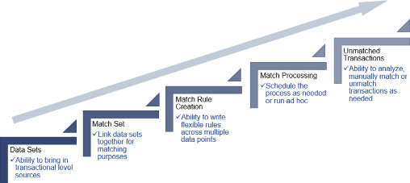

Transaction Matching Overview
At the beginning of this book, our discussion was focused on Account Reconciliations, which is the process of validating Account balances to be accurate and complete. At its core, an Account balance is an accumulation of transactions over time and, therefore, to understand a balance, the User needs to analyze the transactions flowing through it. Transaction Matching is a solution that helps to automate and optimize the analysis process, and in this chapter, we will define what Transaction Matching is, how organizations perform matching today, and the value of using the OneStream Transaction Matching solution. We shall also identify potential use cases where Transaction Matching can be leveraged.
Transaction Matching Overview
Transaction Matching Process
In today’s world, the process of matching transactions to ensure accuracy has become a very important part of daily operations. With the evolution of financial systems, the ability to capture data has become expansive, and managing data to ensure accuracy is difficult. As we use data to make decisions, understanding the risks and exposures at the transactional level are critical, and Transaction Matching is a process that is used to help facilitate analysis and provide the signals needed to make decisions.
At its core, Transaction Matching can be defined as the process of collecting and matching large volumes of data across multiple sources. The process assists in identifying Unmatched transactions and resolving differences to accurately finalize period-end balances and close the books. Although typically used in conjunction with preparing Reconciliations, Transaction Matching can be done on any data where you are trying to ensure the information matches system to system, process to process, or item to item.
Transaction Matching Overview
Manual Process
Transaction Matching is typically performed manually in organizations today. It is a very time-consuming process that requires each User to set up their own matching files. The files are normally prepared in Excel and must be updated and rolled forward each period.
As soon as the matching files are ready, Users will extract the transactional data from the source systems. Often, Users do not have the proper access required to retrieve all the necessary transactions, or the transaction files are difficult to extract. In addition, external file sources may be received in a format that is not usable, requiring the Users to manipulate the file.
Assuming the match file is prepared, and all the data is received, the User is then ready to perform the matching process. To identify a match, the User creates formulas, performs sorting, and highlights transactions that agree. Because there are multiple different Match Rules, and the process is manual, the User must iteratively pass through their data multiple times trying to identify matches, which is time-consuming and prone to error as items might be Matched incorrectly by the User.
Once matching is completed, the User is left with a list of Unmatched transactions, also referred to as open items. The open items have to be manually copied into the Reconciliation or reported to management. These transactions also need to be transferred to next month’s matching file so the process can start again.
Although each step is not independently difficult, when combined they create an arduous process that is very prone to errors. In addition to the steps above, the User is also responsible for ensuring that extracts are up to date, files are manipulated consistently month over month, the match formulas are accurately applied each period, and none of the steps get missed. Also, note that this is not simply done by a few Users but by many across an organization where high volumes of transactions need to be reviewed. It is almost impossible to ensure control(!) and – because of these concerns – organizations are looking for solutions that automate the matching process.
Transaction Matching Overview
Automating with OneStream
The OneStream Financial Close solution offers an automated process for Transaction Matching. The Transaction Matching solution is broken down into five key process steps:
Data Sets
Match Sets
Match Rule Creation
Match Processing
Unmatched Transactions

Figure 5.1
Below, we will walk through each of the process steps to better define the value delivered when using the Transaction Matching solution.
Transaction Matching Overview › Automating with OneStream
Data Sets
Data sets are the first step in the Transaction Matching process, where raw data or transactions are gathered to perform matching. Data also needs to be loaded at the right detail level with the appropriate fields to ensure Match Rules and matches are successful.
The Transaction Matching solution utilizes the data integration capabilities of the OneStream platform. By leveraging this core functionality, data can be imported using the Direct Connect process or through flat file loads. Data loads can be set up within the Task Scheduler to automate the process and allow data to be imported more frequently. When performing the work manually, non-OneStream Users tend to only pull the data once, due to the amount of time spent manipulating the files. However, when using our solution, organizations typically load data on a daily or weekly basis allowing the process to stay current and corrections to be performed in a timely manner.
Data can also be aggregated and transformed by the system upon import, eliminating manual manipulation, and the system can enhance data by adding and updating fields as necessary. Data fields can be augmented by parsing, concatenating, calculating, populating from lookup tables, or applying business logic as needed.
In addition, there is the ability to stack or split data files upon import. Data stacking is used in situations where you may have multiple General Ledgers or source files that define a specific data set. Rather than requiring all the files to be in the same format, the system allows you to map the detail data fields to the OneStream data fields on a file-by-file basis. This provides the flexibility to bring in many different file layouts without the need to standardize the format. Similarly, if you have a single file that contains data for multiple Match Sets, the solution can split the file. Data splitting, meanwhile, allows you to leverage a single file to populate multiple Match Sets. Data stacking and data splitting provide efficiency in data loading.
Transaction Matching Overview › Automating with OneStream
Match Sets
A Match Set links data sets together for processing. Within the system, you can have multiple Match Sets to support your process. Match Sets are typically defined by the type of data required (Bank versus Suspense versus Intercompany, etc.), the rules applied, and the security needed.
Although manual matching is typically done Account by Account, this creates inconsistency on how matching is performed. Being able to have similar Accounts together in a single Match Set provides not only efficiency but also consistency and standardization on how the matching occurs. Also, the solution supports Match Set-level security (as well as transaction-level security) to ensure Users see only what they should see. This allows us to bring data together in a single Match Set but still ensure data is only viewed by those with appropriate security.
Transaction Matching Overview › Automating with OneStream
Match Rules
The power of the matching process comes from its rule capabilities. Match Rules are the logic that runs against the data, and are created and maintained by the Match Set owner. You can create as many rules as needed to complete your process. Rules can be applied to the entire Match Set or – when utilizing filtering capabilities – they can be applied to a subset of data for more precision.
Within a rule, the system can match single transactions to each other or aggregate transactions prior to matching. Rules can be set up as either automatic or suggested. Automatic Rules create the match and move the transactions to the Matched state with no further action needed. Suggested Rules also create the match but require the User to accept the match, thus creating a review process. Regardless of the type of rule (automatic or suggested), the system automates the creation of the match and eliminates the formula errors that are prevalent in a manual process.
Rules are also easy to set up and maintain. Within the interface, Users will select the required fields from sets of drop-downs. Users do not have to write any complicated code or know programming logic to create rules. In addition, tolerances can be set up for amount and date fields to allow for variation (as needed). Rules are prioritized in the order that Users desire them to run; the most precise rules run first, and the least precise rules run later in the process. In addition, if data changes, new rules can be created at any time, and they can be reordered or deactivated as necessary.
Transaction Matching Overview › Automating with OneStream
Processing
Processing is the step of running the rule-based logic against the transactional data to automatically create matches. The process can be initiated on demand, set up on a schedule using the OneStream Task Scheduler, or linked with the data load process to automatically run after the data is imported.
Automating Match Rule processing can result in a completely hands-off approach so that when Users come into the solution, they can spend their time analyzing Unmatched transactions. Also, processing the rules initiates the audit on the matches. Each match creates a Match ID, identifies the rule by which the match was made, captures the date and time stamp of the match, and updates the status of the transaction to ensure that a transaction is not Matched twice. All of these items provide control and auditability in the process.
Transaction Matching Overview › Automating with OneStream
Unmatched Transactions
Once the matching process is complete, all Unmatched transactions are available for analysis, reporting, or future matching. Users can perform manual matches on transactions, adding Reason
Codes, attaching supporting documentation, or providing commentary (as needed) for enhanced auditability. All Unmatched transactions are also automatically carried forward into future periods and are made available for future matching. In addition, Unmatched transactions can be pushed to a Reconciliation to create detail items with the ability to drill back to the underlying transactional information.
Transaction Matching Overview › Automating with OneStream
Overall Solution
The steps defined above make up the Transaction Matching solution. When implemented, it creates a controlled, consistent, efficient and automated process where Users can perform matching more frequently, and proactively correct any issues found. In addition, they can surface this data into information and create Dashboards and Reports.
Transaction Matching Overview
Transaction Matching Use Cases
Matching can be used in many different scenarios. Although most Users think of matching as a financial activity, the process can be used in any situation where you are trying to validate two or three sets of information. Below are some examples of how Transaction Matching is used:
Transaction Matching Overview › Transaction Matching Use Cases
Financial Use Case
Bank to General Ledger
Third-Party Processors to General Ledger
Sub-ledger Matching
Deferred Revenue
Clearing/Suspense Accounts
Intercompany
Accruals
Transaction Matching Overview › Transaction Matching Use Cases
Non-Financial Use Case
Physical Inventory counts
Contract/Employee Hour Tracking
Project and Quantity Information
Employee Validation
System Migrations
SKU Number Validations
Invoice/PO Item Counts
Transaction Matching Overview
Driving Optimization
Implementing Transaction Matching, as discussed, will drive optimization, consistency, visibility, and overall control. In chapters 6-8, we will walk through the administration process, implementation best practices, and the User Experience to start you on the path of matching automation. I am sure many readers will have Accounts or processes already in mind for the solution, but I would encourage people to think beyond the typical. Remember that matching can be used in any situation where we are trying to tie out information, so why not extend the investment even further by using it in scenarios beyond finance? There are lots of opportunities to really make a difference!